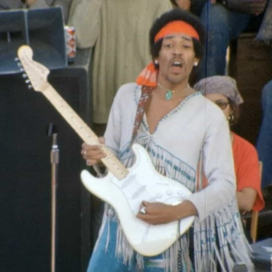

The Hendrix Chord
The Hendrix chord is an E7#9 chord played with a specific voicing that gives it a distinctively bluesy and dissonant sound. It’s a great chord to add some dramatic flair to your guitar playing, and it's a hallmark of Hendrix’s innovative approach to the instrument.

Most seen with guitars
-
Supro Ozark
The Supro Ozark is a vintage electric guitar model known for its unique design and tone. Originally produced in the late 1950s, it features a distinctive body shape and a single pickup configuration. The Ozark is often associated with its raw, bluesy sound, making it a favorite among musicians seeking a classic, retro vibe.
-
1964 Fender Stratocaster, Olympic White “Linda”
The 1964 Fender Stratocaster, often referred to as the "Linda" Stratocaster, is a highly sought-after vintage guitar.
Specifications:
A typical 1964 Stratocaster would feature:
Alder body: Lightweight and resonant.
Maple neck with a rosewood fingerboard: Known for its smooth playability and rich tone.
Single-coil pickups: Three pickups providing the characteristic Stratocaster sound, bright and clear with a bit of twang.
Tremolo bridge: Allowing for expressive pitch bending. -
1965/66 Fender Stratocaster, Black “Monterey”
Customization: Hendrix was known for modifying his guitars to suit his playing style. He would often reverse the strings on a right-handed Stratocaster to play left-handed, which influenced the tone and playability.
Legacy: The 1965/66 Stratocasters are highly prized by collectors and players not only for their quality but also for their association with Hendrix and the cultural revolution of the 1960s. -
1967 Gibson Flying V
The 1967 Flying V is highly collectible, especially when in good condition and with original parts. Its value has increased over the years due to its association with legendary guitarists and its distinctive look.
Though more commonly associated with the Fender Stratocaster, Hendrix also played a Flying V, notably a custom-painted one. -
1968 Fender Stratocaster, White “Woodstock”
Standard Stratocaster configuration with one volume knob, two tone knobs, and a five-way pickup selector switch. However, many 1968 models originally came with a three-way switch, and players often modified them to the now-standard five-way switch for greater tonal versatility.
Favorite Amps
-
Marshall Super 100/JTM45

The Marshall Super 100, also known as the JTM45, is one of the most iconic guitar amplifiers in the history of rock music. Introduced in the early 1960s, it played a significant role in shaping the sound of many famous rock bands and guitarists.
-
Sound City One Hundred

The Sound City 100 is renowned for its clean headroom and powerful, punchy sound. It can produce a wide range of tones, from clean and articulate to overdriven and aggressive.
-
Vox AC30

The Vox AC30 is one of the most iconic guitar amplifiers in the history of rock and roll. Introduced by Vox in 1958, it has been used by countless legendary musicians and continues to be a favorite among guitarists for its distinctive sound and vintage charm.
-
Fender Dual Showman

The Fender Dual Showman is a legendary guitar amplifier that played a significant role in the development of rock and surf music in the 1960s.Known for its high clean headroom, which allows it to stay clean and undistorted even at high volumes. This makes it ideal for surf rock, country, and jazz, but also a great platform for pedals.
Pedals & Effects
-
Dallas Arbiter Fuzz Face

Known for its distinctive round shape and rich, warm fuzz tones, the Fuzz Face has been a favorite of legendary guitarists.The original Fuzz Face used germanium transistors (usually AC128 or NKT275) which are key to its characteristic warm and smooth fuzz tone. Later versions used silicon transistors, which provided a brighter, more aggressive sound.
-
Roger Mayer’s Octavia
The Octavia combines fuzz with an octave-up effect, created by a circuit that generates a signal one octave above the original note being played. This is achieved using a combination of diodes, transformers, and transistors.
-
Vox V846 Wah-Wah

The V846 is known for its smooth and musical sweep, with a broad range that covers a wide spectrum of frequencies. This allows guitarists to emphasize different tonal regions, from deep, bassy tones to sharp, cutting highs.